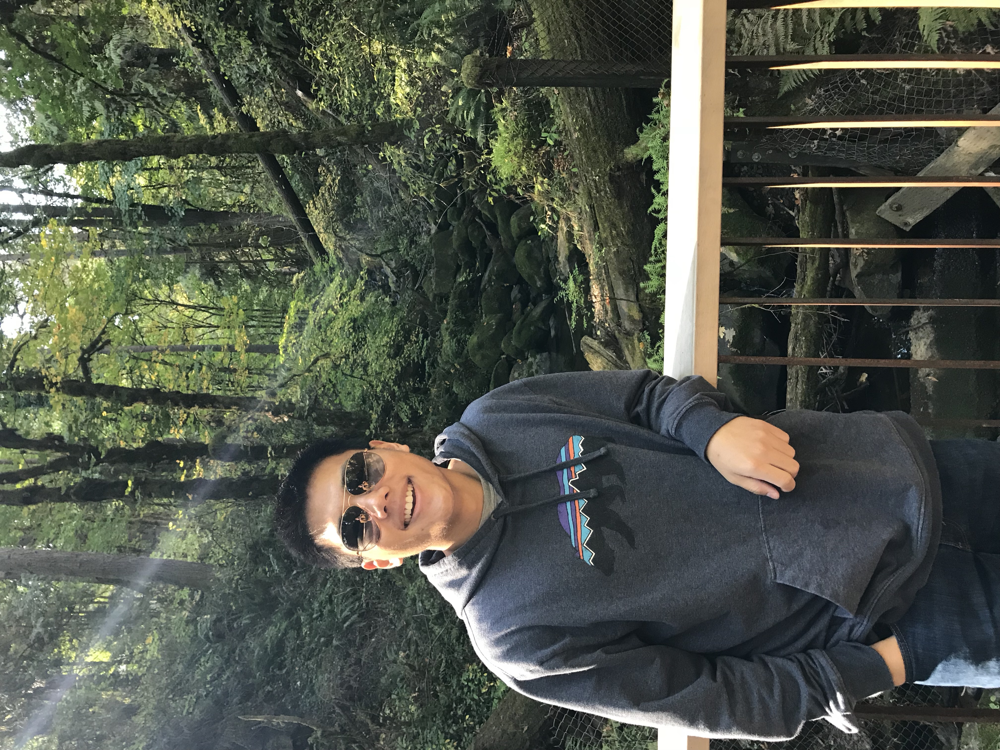

Hello!
I'm Paul and I am currently learning how to code! I am an aspriing fullstack developer currently enrolled in UC Berkeley Extension's Coding Bootcamp.
I am a recent alumni of UC Berkeley, graduating with a bachelors in Economics. I have previous work experience with XL Catlin as an Underwriting intern, and then as a Financial Advisor for Merrill Lynch upon graduating college. I completed two courses in computer science at Berkeley, and I immediately fell in love with it; I loved the struggle, the grind, and the overall beauty of code. After many hours of debating, I have decided to take the risk upon this new adventure and dive 100% into the world of computer science. In my free time, I love to play video games, mainly Super Smash Brothers for Ninentdo Switch. Other video games I love are Overwatch and Monster Hunter World. I am a certified bartender and you can catch me bartending at the California Pizza Kitchen in Emeryville, or whipping up cocktails at home. My other hobbies include hiking/backpacking, snowboarding, piano, and basketball.